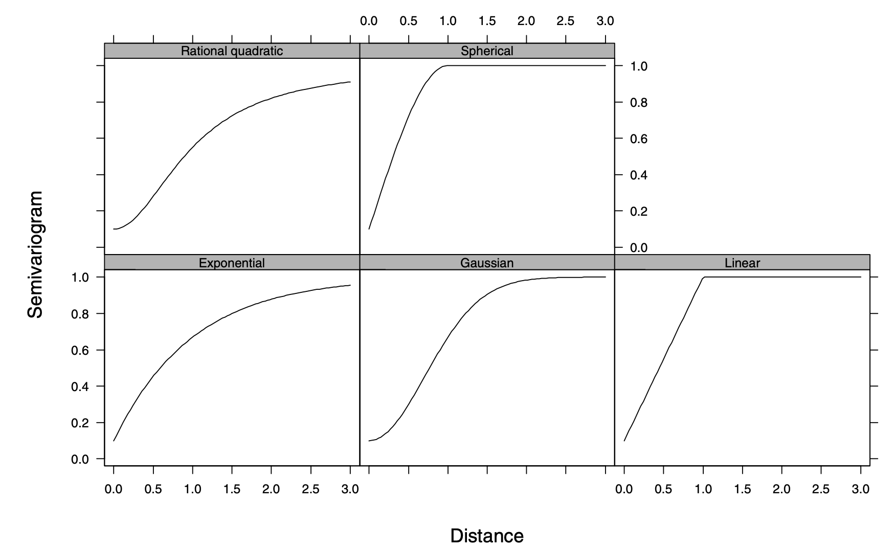
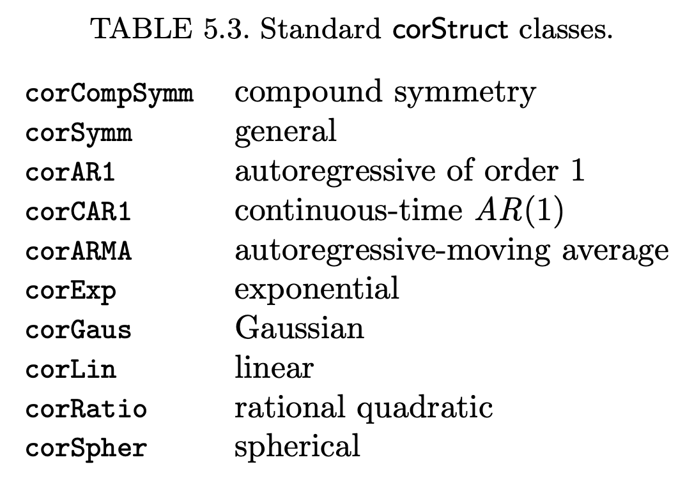

[,1] [,2] [,3] [,4]
[1,] 1 0 0 0
[2,] 0 1 0 0
[3,] 0 0 1 0
[4,] 0 0 0 1Repeated measures
Today’s goals
Explore key concepts in repeated measures:
- The independence assumption
- What is repeated measure analysis
- Correlation structure types
Motivational example - study design
- 2-way factorial in a split-plot
- Whole-plot: K fertilizer rates: 0, 30, 60 kg K/ha
- Split-plot: N fertilizer rates: 0, 100, 200 kg N/ha
- 3 x 3 = 9 treatment combinations
- RCBD with 4 blocks
New response variable: yield over time
Up until now, our response variable has been yield measured once at the end of the season.
What if we measured yield at 4 different time points?
Research questions of interest:
- Interaction between Treatment and Time
- Does the effect of treatment change over time?
- How do treatments compare at any given time point?
The model
yield_kgha ~ (1|block/krate_kgha) + krate_kgha*nrate_kgha*fdap
(1|block/krate_kgha)sets the random effect nested structure of the split-plot RCBD designkrate_kgha*nrate_kgha*fdapsets the fixed effect structure of treatment design, with all main effects AND interaction termsfdapis days after planting when plots were harvested, treated as a factor
Linear (mixed) model assumptions
Random effects (between-subject):
\[ (\alpha\rho)_{ik} \sim iidN(0, \sigma^2_{\alpha\rho}) \]
. . .
Error/residual (within-subject):
\[ e_{ijk} \sim iidN(0, \sigma^2_{e}) \]
The independence assumption
The observation/residual (\(e_{ijk}\), within-subject) independence assumption is largely based on the fact that treatment levels can be/are randomized to experimental units.
This is expressed as correlations among observations being set to zero in the residual matrix.
The independence assumption
The example below shows the correlation matrix structure for the 4 yield measurements for the first plot in the study:
. . .
The diagonal values represent a shared common variance, and the off-diagonal values represent a shared common correlation of zero.
The independence assumption
However, randomization is not always possible, as in this case (cannot randomize time of harvest).
For example, if one of the treatment factors of interest is a measure of time or space, their levels are non-randomizable.
Breaking the independence assumption
Examples of time and space treatment factors:
Time (mostly 1D), measurements taken at different
- crop stages
- days after planting
- days after application (of some input)
- days after incubation
Space (2D), measurements taken at different
- soil depths (1D)
- locations characterized by x and y coordinates (longitude, latitude)
- used a lot in precision ag and geospatial analysis
Fixing the lack of independence among observations
In these cases, assuming correlation of zero may be wrong, so we need to
- relax this assumption,
- allow for the model to calculate these correlations in different ways, and
- check if any of these ways provide a better fit to the data.
Relaxing the independence assumption
To relax the independence assumption, we test different correlation structures on the residual matrix.
The structures can be classified as:
- Serial correlation structures (time)
- Spatial correlation structures (space)
Serial correlation structures
Require time points to be integers (e.g., 0, 5, 10 DAP) and equally spaced.
Types:
- Compound symmetry
- General
- Autoregressive-moving average
Serial - Compound symmetry
Simplest
Assumes equal correlation among errors of the same group
No. of parameters estimated: one (\(\rho\))
Too simplistic for time-series, as it is common that correlation decreases as time interval increases (not a single fixed correlation)
Correlation matrix structure for the 4 yield measurements for the first plot in the study with a CS correlation value of 0.3:
[,1] [,2] [,3] [,4]
[1,] 1.0 0.3 0.3 0.3
[2,] 0.3 1.0 0.3 0.3
[3,] 0.3 0.3 1.0 0.3
[4,] 0.3 0.3 0.3 1.0Serial - General
- Most complex!
- Each correlation in data is represented by a different parameter
- Number of parameters increases quadratically with the maximum number of observations within a group
- Often lead to overparameterized models
- Correlation matrix structure for the 4 yield measurements for the first plot in the study with general correlation:
[,1] [,2] [,3] [,4]
[1,] 1.0 0.2 0.1 -0.1
[2,] 0.2 1.0 0.0 0.2
[3,] 0.1 0.0 1.0 0.0
[4,] -0.1 0.2 0.0 1.0Serial - Autoregressive-moving average
Current observation as a linear function of previous (lag) observations
The number of past observations included in the linear model (p) is called the order of the autoregressive model, which is denoted by AR(p)
There are p correlation parameters in an AR(p) model, e.g. AR(1) has 1 correlation parameter
Serial - Autoregressive-moving average
- The AR(1) model is one of the few serial correlation structures that can be generalized to continuous, non-equally-spaced time measurements
- Correlation matrix structure for the 4 yield measurements for the first plot in the study with a AR1 correlation structure and correlation value of 0.8:
[,1] [,2] [,3] [,4]
[1,] 1.000 0.80 0.64 0.512
[2,] 0.800 1.00 0.80 0.640
[3,] 0.640 0.80 1.00 0.800
[4,] 0.512 0.64 0.80 1.000Serial - Autoregressive-moving average
Current observation is a linear function of independent and identically distributed noise terms
The number of noise terms included in the linear model (q) is called the order of the moving average model, which is denoted by MA(q)
There are q correlation parameters in an MA(q) model
Serial - Autoregressive-moving average
Mixed autoregressive–moving average models, called ARMA models, are obtained by combining together an autoregressive model and a moving average model.
There are p + q correlation parameters p in an ARMA(p, q) model
Spatial correlation structures
Used to model continuous 2D data
Although spatial, can also be used for time variables as it is more flexible in relation to non-equally distant intervals
Spatial correlation structures are generally represented by their semivariogram, instead of their correlation function
The correlation parameter p is generally referred to as the range in the spatial statistics literature
Spatial correlation structures
Some types of variogram models for spatial correlation structures:
- Exponential
- Gaussian
- Linear
- Rational quadratic
- Spherical
Spatial correlation structures

Repeated measures in R
In R, we are going to use the package nlme.
We’ll make extensive use of a few functions, where
lme()is the main one.lme()allows us to fit mixed-effect models with nested random effects (e.g., split-plot in RCBD) AND test for different residual correlation structures
Specifying correlation structures in R

Repeated measures workflow
Run the default model that assumes equal correlation (the default assumption) and use it as a baseline
Run different versions of the first model, where in each version you attempt a different correlation matrix structure.
Make sure that the correlation structure you are using matches your repeated measure variable in terms of accepting (or not) non-equally spaced intervals
Repeated measures workflow
Compare all models based on fit criteria like Aikaike Information Criteria (AIC), Bayesian Information Criteria (BIC), etc., where lower values represent better fit.
Select model with lowest fit criteria metric, check assumptions, use it for inference.
Summary
When having time or space as part of the treatment structure, then observations and residuals are not assumed to be independent.
We allow the error correlation matrix to estimate different correlation estimates
We then select the model with the best fit and that has addressed the potential correlation issue
We use the selected model for inference